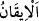
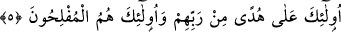

dinardan yarım dinar, (yâni kırkta bir) olarak verilir. Nitekim Allah Teâlâ şöyle
buyurur: “Onların mallarından sadaka al ki, bununla onları (günahlardan)
temizleyesin ve onların (sevaplarını) artırıp yüceltesin.” (et-Tevbe, 9/103). Şerîata
uygun zekat vermek ve dinî esasların gereğini yerine getirmekle avam cehennemden
kurtulur. Havâssın zekâtı, kalblerinin dünyâ muhabbeti pasından temizlenmesi için malın
hepsini vermektir. Ahassu’l-havâssın zekâtı ise Mâbud’dan maksadlarına ulaşmak için
varlığı bezletmektir. Nitekim Peygamberimiz (s.a.) şöyle buyurmuştur: “Kim Allah için
olursa, Allah da onun için olur.”[61]
Mesnevî’de der ki:
Değil mi ki hayretinden “Kim Allah için var olursa” sözüne mazhar oldun,
Ben de senin için “Allah onun için olur” sözüne mazhar olurum.
“Onlar âhirete” yâni âhiret yurduna ve amellerin karşılığının verileceğine “de kesin
olarak îman ederler.” Yeniden diriltilme ve hesap konusunda şüphe etmezler.
Âhirete, dünyâdan sonra geldiği için bu isim verilmiştir.
“
” Şeksiz şüphesiz olmak, demektir. Yâni onların âhiret hakkında şek ve
şüpheleri yoktur; yâni öldükten sonra dirilmeyi ve cezâyı tasdik ederler.
et-Te’vîlâtü’n-Necmiyye’de şöyle denilir: “Onlar” dünyâdan geçtikleri ve Mevlâ’ya
yöneldikleri için “âhirete de kesin olarak îman ederler.” Âhiret, dünyâ menzilinden
çıkıp/geçip Allâh’a yürüyen için ikinci bir yurttur. Dünyâdan çıkan/geçen kimsenin
âhirette olduğunda şüphe yoktur. Dolayısıyla o âhirete îmandan sonra ona îkan (kesin
îman) mertebesine yükselmiş olur.”
Fakîr (Bursevî) der ki: Ehlüllah’a göre dünyânın cismânî-zulmânî hicablardan,
âhiretin ise rûhânî-nûrânî hicablardan olduğunda şüphe yoktur. Sâlikin seyr-i ekvândan
seyr-i ervâha, ondan da seyr-i âlem-i hakîkate geçmesi gerekir. Çünkü hakîkat âlemi,
önceki iki âlemin üstündedir. Sâlik ruhlar âlemine ulaştığı zaman îman îkan hâline, ilim
de ıyân hâline gelir. Hakîkat âlemine ulaştığında ise ıyân, ‘ayn’a dönüşür. Allah
Teâlâ’ya hamd olsun.
5. İşte onlar, Rableri tarafından gösterilmiş doğru yol üzeredirler ve onlar
kurtuluşa erenlerdir.
“İşte onlar,” bu yüce vasıflara sâhip olan muhsinler/güzel davrananlar “Rableri
tarafından gösterilmiş doğru yol üzeredirler.” Allah onlara yollarını açıklamış ve
onları bu yolda muvaffak kılmıştır.
Keşfü’l-esrâr’da der ki: “Doğru yol üzeredirler ve Allah onları hidâyet üzere